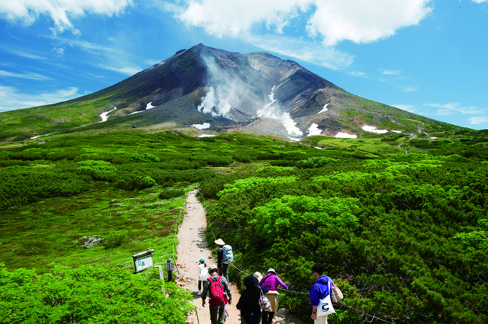

あなたにおすすめの山は...旭岳です！


- 標高：2290m
- 場所：北海道中央部、大雪山国立公園内
- 登山時間：登り約2時間程度、下り約1.5時間程度
- アクセス：旭岳温泉から「旭岳ロープウェイ」で姿見駅、旭川駅や旭川空港からバス（旭岳温泉行き）
特徴
・活火山であり、山頂付近には噴煙が上がる箇所もある
・標高1,600mまで短時間で上がれるため、体力に自信がない人でも登頂しやすい
・季節ごとに違った花や自然美が楽しめる
・山頂からは大雪山系の壮大な山並みや十勝平野が一望できる